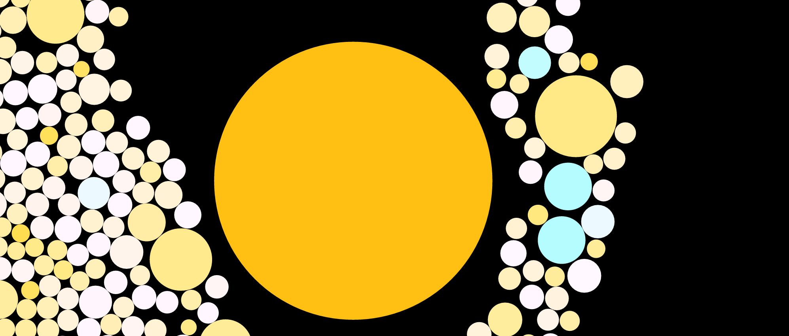
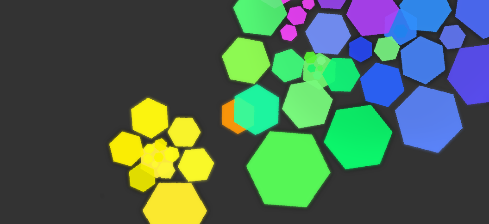
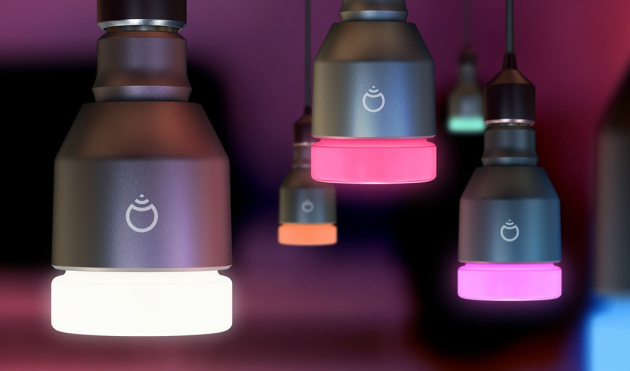

Arrian Purcell
Developer | Designer
Projects
Space Browser
23 September 2015

Code Visualiser
15 August 2015
Understanding Through Code Visualisation
20 October 2014

LIFX Python
20 October 2012

Instagram-ery